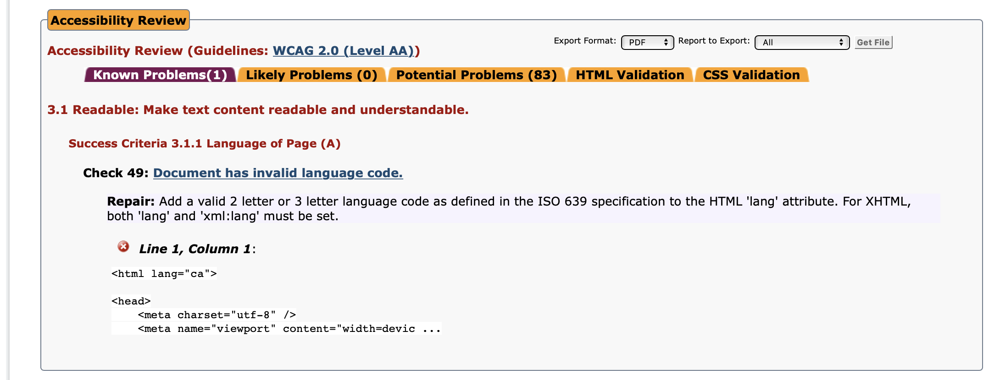

En la implementació del lloc web he donat prioritat a provar el màxim de tècniques de tractament d'imatge i d'animació sense buscar un resultat artísticament espectacular. Les imatges són majoritàriament descarregades de Unsplash o de pàgines de PNGs gratuïts. Finalment, algunes són generades per mi o són còpies de pantalla realitzades durant l'ús d'algunes aplicacions.
De la bibliografia/videografia recomanada al M3 pel tractament d'imatges destaco com a útils l'article responsive-images-101-definitions i el video de Cristina Chumillas. Són sens dubte enllaços a desar als marcadors.
Tot i que el meu lloc inicialment està implementat amb Bootstrap que facilita enormement la gestió dels canvis de tamany de viewport, m'he decidit a implementar algunes parts amb CSS pur. El lloc és mobile first i per l'el·lecció dels media queries vaig buscar quina era la estratègia més recomanada i vaig topar amb l'article The 100 correct way to do CSS breakpoints. Em va semblar encertat el plantejament i per això he implementat els següents media queries:
@media screen and (max-width: 599px) {
}
/* tablet portrait */
@media screen and (min-width: 600px) {
}
/* tablet landscape */
@media screen and (min-width: 900px) {
}
/* laptop */
@media screen and (min-width: 1200px) {
}
@media screen and (min-width: 1800px) {
}
Tal i com he mencionat prèviament, he seguit fent servir Bootstrap, en particular per simplificar-me la vida en temes de responsiveness. L'aparença d'aquest framework ha estat remplaçada en gran part per regles CSS custom.
El Boilerplate resta exactament igual a com va quedar al final de la PAC1, l'eina parcel-plugin-imagemin l'havia descobert durant aquesta primera pràctica i ja l'havia integrada al boilerplate.
La capçalera que proposo en aquesta PEC2 no te gaire en comú amb la que vaig implementar per la primera PAC. El logo ha estat remplaçat per un SVG i per tal de donar-li més lleugeresa a les pàgines, he canviat els colors de la barra de menú, ara el fons és blanc i el text pren el mateix color blau que el logo. El logo és una combinació de 2 clip-pathsmúltiples. El primer clip-path conté 3 cercles, un estel i el text. Un segon clip-path format per un cercle blau i un triangle ocre es superposa a les primeres figures pintant-les d'aquesta manera :
Puc dir que el peu del lloc web ha estat un gran laboratori de clip-paths. Inicialment l'havia plantejat com un poligon en forma de serra pels extrems i que canviava el nombre de puntes segons l'ample de la pàgina. No obstant, tanta punta no li donava un aspecte armònic al lloc i em vaig decidir per afegir una onada. Però jo no volia una onada sinusoïdal i vaig descobrir l'eina, Get Waves de z creative labs. Més tard vaig tenir grans problemes amb el text que havia d'anar superposat ja que l'havia integrat com a part del SVG. El problema era que el tamany d'aquest variava massa entre viewports estrets i amples i, o no es llegia en els primers, o quedava massa gran en els darrers. Finalment vaig optar per afegir el text com a block posicionat de manera absoluta i gestionar el seu canvi de posició amb media queries
La pàgina de benvinguda ha estat completament redissenyada, la primera era massa carregada i he aprofitat per practicar algunes animacions. Es composa d'una imatge en background que es serveix amb 4 densitats possibles mitjançant la crida a image-set. Per fer-la responsive he aplicat resolutin switching perquè el seu contingut s'adapta bé a tots els tamanys de viewport. Sota la imatge apareix un triangle rectangle invertit en els viewports de més de 900 px d'amplada. Es forma mitjançant d'un clip-path de dimensions relatives. Aquesta zona conté un text de presentació que pren la inclinació de la hipotenusa del triangle. En les pantalles més estretes el text no cabia en el triangle resultant així que aquest passa a ser un rectangle. Des d'aquesta pàgina es pot accedir directament als menus de categoria
En quant a les animacions, aquesta pàgina en conté tres i totes elles fan ús de keyframes. La imatge principal amb l'animació fade-slide-down comença a aparèixer 0.5 segons deprès de començar a carregar-se la pàgina i triga 2 segons en enquadrar-se al seu destí final.
Just desprès entra el text inclinat des de la dreta de la pantalla, i a les pantalles amples, acaba inclinant-se. Aquesta animació l'he haguda de tractar als media queries perquè la inclinació final ha de variar segons el tamany del viewport.
Per acabar, faig aparèixer ordenadament l'icona central, el títol principal i els enllaços a les pàgines de categoria. Per això faig servir la mateixa animació i jugo amb el retard d'aparició. A totes les animacions he optat per fer servir una funció temporal tipus cubic-bezier, que fa més suau les aparicions. Per determinar els paràmetres, m'he recolzat en l'eina proposada per Cubic Bezier
Totes les pàgines de categoria segueixen un format equivalent i totes contenen un títol, un text introductori (que a la PAC1 es trobava dins d'un quadre de color) i una imatge principal, aquesta darrera d'acord al que es demanava a l'enunciat de la pràctica. He escollit imatges que siguin adequades per a tot ample de pantalla, de manera que la seva responsivitat està gestionada amb resolution switching. Aquestes imatges apareixen a la pantalla on-scroll i per això he hagut d'implementar una mica de Javascript (veure fitxer animate-on-scroll.js. La idea és que els elements que han d'animar-se es marquin amb la classe is_visible. Per determinar si un element es troba a la part visible de la pantalla, he recuperat la funció de isElementInViewport de Stackoverflow. Aquest cop no he fet servir keyframes i m'he limitat a jugar amb les transicions. En el cas de les imatges, quan són marcades com a visibles, la seva opacitat va passant de 0 a 1 alhora que es produeix un petit moviment de translació vertical i que es gira lleugerament la imatge. En el cas del títol, em limito a jugar amb l'opacitat, sinó serien massa elements "ballant" i podria quedar massa sobrecarregat
Els consells, que abans afegia al final de les pàgines per tal d'animar el lector a passar a la pàgina següent, apareixen ara en forma de post-it animat des de la dreta de la pantalla mitjançant una transició.
I ja per acabar amb el tema de les animacions, la majoria dels links que es troben al text del lloc, són animats. Quan es passa per sobre d'un enllaç, la linia de subratllat es redibuixa. Per aconseguir aquest efecte, he posat una vora al pseudoelement after associat als enllaços i animo aquesta vora quan es fa hover sobre l'enllaç
Al lloc web he implementat tres tipus diferents de tactament d'imatge:
| Nom Fitxer | Dimensions de la imatge | Tamany de la imatge | Resolució recomanada |
|---|---|---|---|
| index-background-1x.jpg | 972x648 px | 131KB | 1x |
| index-background-2x.jpg | 1555x1037 px | 262KB | 2x |
| index-background-4x.jpg | 2061x1374 px | 422KB | 3x |
| index-background-8x.jpg | 3888x2592 px | 1MB | 8x |
| Nom Fitxer | Dimensions de la imatge | Tamany de la imatge |
|---|---|---|
| website-design-600.jpg | 600x399 px | 74KB |
| website-design-1200.jpg | 1200x798 px | 197KB |
| website-design-1800.jpg | 1800x1197 px | 328KB |
| website-design.jpg | 4193x2785 px | 1MB |
He passat totes les pàgines (excepte aquesta de documentació) per l'eina AChecker i he aconseguit corregir gairebé totes les errades que anaven apareixent, que afortunadament eren poques. Malauradament, no he sabut corregir l'errada sobre el llenguatge utilitzat a la pàgina, pel que he vist, el català ja es troba a l'especificatió ISO 639 i el seu codi és "ca"... 
I fins aquí arriba el detall de les meves aventures..feliç lectura!